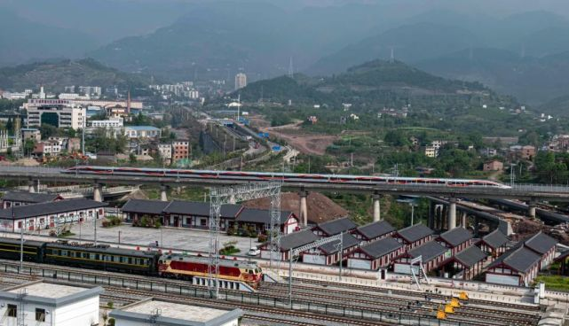
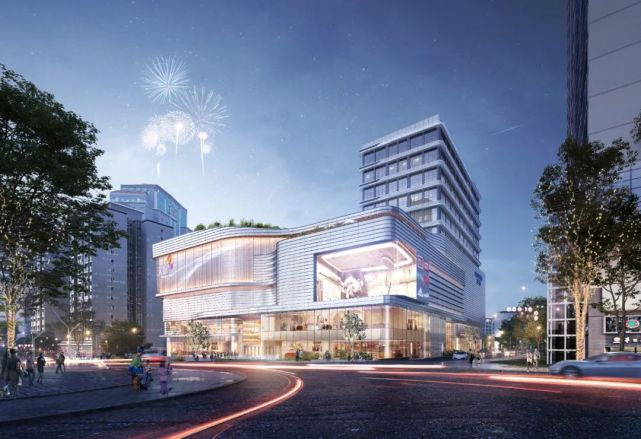
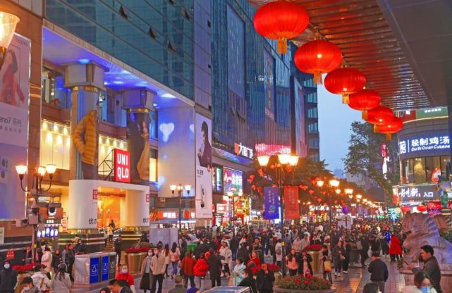

提振消费信心，推动消费持续回暖。近日，重庆市发改委等8部门发布《促消费相关服务业发展若干政
策措施》，涉及支持促消活动、消费金融及促进汽车、家电等大宗消费共计19条（下称“促消费19条”
覆盖面广、针对性强。 两江观察研读“促消费19条”发现，不少措施颇具重庆特色，同时结合重庆陆续
实施的一批消费类市级重大项目可以看到：重庆促进消费，既有战略上的主动，也有战术上的精准，
既立足当前力求实效，又着眼长远夯实基础。 |
|  |
▲2021年6月12日，重庆国际博览中心，市民正在观看车展。龙帆 摄/视觉重庆
夯实产业基础
重庆一直把促进消费作为拉动经济的重要动力，密集出台了诸多措施。
去年11月，重庆出台《培育建设国际消费中心城市实施方案》及若干
配套政策；今年2月召开培育建设国际消费中心城市推进大会，明确到
2030年将建成具有全球影响力和竞争力的国际消费中心城市；同时，
《关于做好近期促进消费工作的通知》等具体举措出台……这一系列
政策举措，时点选择精准、措施扎实有力、可操性强，为重庆促进消费
规划了清晰的“路径图”，制定了详细的“施工图”。 “促消费19条”的一大
特点是聚焦重点领域，例如资金将重点流向文化、旅游、零售、餐饮、
体育等领域，汽车、家电等大宗消费，以及乡村旅游、特色民宿等文旅
“促消费19条”的又一特点是凸显本地优势、打响消费品牌，例如对“巴味
渝珍”“渝货精品”“渝见美品”等品牌产品和文创产品，提出了明确的支持
措施，这对重庆消费品工业来说是一大利好。
同时，两江观察梳理发现，日前发布的2022年市级重大项目中，重庆在
“消费强相关”的产业领域进行重点布局，为培育建设国际消费中心城市
夯实基础。 例如汽车、电子信息这两大支柱产业，比亚迪、金康等新
能源汽车项目，vivo重庆生产基地B地块项目、传音移动年产7000万部
品牌手机生产线等项目，将为汽车、手机等大宗消费提供支撑。 再如
消费品工业，2022年市级重大项目中，该板块有20余个项目。例如江
北的海尔洗碗机生态工厂项目，规划年产20万台洗碗机生产线；荣昌
的高端智能厨卫家居生产项目，年产能为浴室柜100万套；黔江的中新
绿雅现代化农业产业项目，每年可为市场提供鲜品食用菌4.4万吨；云
阳的恒顺调味品生产项目，年产3万吨食醋、4万吨豆瓣酱、3万吨复合
调味料……这些市级重大项目涉及门类广，在调味品、植物油、玩具、
智能厨卫家居、生鲜、服饰、饮品等细分领域均有布局，投资规模较大
而且加快向绿色化、智能化、高端化的方向迈进。 还有颇具巴渝风的
文旅产业，2022年市级重大项目中，该板块有40余个项目。例如南川清
凉山特色农旅融合一期项目、山王坪国际旅游度假区一期项目、天生城文
旅街区等重大项目，涉及乡村游、避暑游、体育、文化等领域，提档升级的趋势明显。 |
|  |
▲2月12日晚，渝中区八一路，市民和外地游客摩肩接踵逛夜市观景购物品美食。钟志兵 摄/视觉重庆
提升消费能级 优化“众星拱月”的消费布局，有利于整体提升重庆的消费能级。除中心城区外，重庆促
进消费的众多政策举措中，对区县市场的重视度和“强化度”明显提升。 “促消费19条”中，“支持区
展消费活动”排在第一条，将从财政资金的统筹安排上对区县予以大力支持；全市春季和秋季房地产暨
家装展示交易会，将在各区县分设会场；还有，在文化、旅游等消费领域，也纷纷“点将”区县。同时，
两江观察发现，不管是“促消费19条”等政策举措，还是市级重大项目的前瞻布局，对消费能级和消费品
质的提升都更为重视。 特别是对电商物流的布局，重庆进一步下沉区县，提高便利度和覆盖面。为此，
韵达涪陵快递物流基地、巴南中通快递西南地区智能电商总部产业园、渝北中通智慧电商物流园、中新
铜梁冷链物流项目等约数十个项目纳入重庆的2022年市级重大项目中，覆盖十多个区县，将对有效提升
重庆的消费能级提供基础性支撑。对大型商业项目，重庆提出要加强品质提升，在2022年市级重大项目
中，一批商圈如秀山爱琴海城市广场、南岸国瑞·龙门里、渝中朝天门商务集聚区、北碚吾悦广场、沙坪
坝万达文旅城、江北中环万象城等数十个商业项目受到高度 |
|
▲南坪公交站场TOD效果图。（重庆交通开投枢纽集团供图）
强化交通支撑 发挥“轨道上的都市区”的重要作用，带动消费发展。 “促消费19条”提出，
要强化轨道交通的生活服务载体功能，对轨道站开展剩余空间商业利用的予以支持；在
有条件的轨道交通站内“一站一策”打造一批商业小店，引入便利店、咖啡店、奶茶店、甜
品店等消费业态，对店面租金首年减半收取……同时，“促消费19条”还鼓励各区县根据自
身情况出台一些降低交通成本的举措，例如以通过政府购买服务的方式，对旅游客运大巴
实施通行费优惠政策等。 一个接驳高效、立体通达、便捷实惠的交通网络对激活消费“引擎”
的作用不可低估。一方面，交通场站本身就是拉动消费的理想场所；另一方面，交通的便利
度直接决定人流量的多少，是商圈的命脉所系。 从2022年市级重大项目清单中，可以看到重
庆对交通建设与促进消费的综合性考量。 首先在中心城区，将强化轨道交通和TOD的布局，
强势拉动消费回暖。 按重大项目时间表，轨道交通9号线二期、4号线二期、市郊铁路江津至
跳磴线、5号线北延伸段都将在今年完工投用或试运行，为观音桥商圈、江北嘴、回兴商圈、
鱼复新城、龙兴新城、两江国际商务中心等带来非常可观的人流和资金流。预计到2025年，
重庆还有9条轨道交通线路投入使用，商业前景不可限量。 同时，2022年市级重大项目还规
划了大渡口金鳌山轨道TOD工程、南岸南坪汽车站TOD项目、璧山TOD大型城市综合体，加
之重庆已开工的红旗河沟、双堰、九曲河体育公园等项目，以及四公里停车场、海峡路等项
目已完成土地出让，重庆TOD布局正呈现多点开花的局面。 |
|  |
▲4月7日，一列复兴号动车从郑万高铁万州北站驶出，驶向云阳方向。冉孟军 摄/视觉重庆
再看区县，以高铁、高速公路为纽带，区县消费活力将进一步增强。 按照规划，今年，郑万高铁、
万州新田港铁路、黔江过境高速公路、恩施至广元国家高速公路重庆高峰至新田段、快速路一纵线
北碚段将建成投用，将为巫山、奉节、云阳、万州、黔江等地带来更多客流，提升当地零售、旅游
、餐饮、文化、住宿等行业的发展。 把时间线拉长到2025年，渝万高铁、渝昆高铁重庆段、渝湘高
铁重庆至黔江段、重庆枢纽东环线、市郊铁路磨心坡至合川线、武隆至道真高速公路重庆段、铜梁
至安岳高速公路重庆段、江津至泸州北线高速公路重庆段等数十个项目将完工投用。届时重庆全境
的交通便利度将大幅提升，全域消费潜力将得到更大释放，为高品质生活添上亮丽一笔。 |